iOS SDK 教程
iOS SDK 调试指南
iOS 调试思维导图
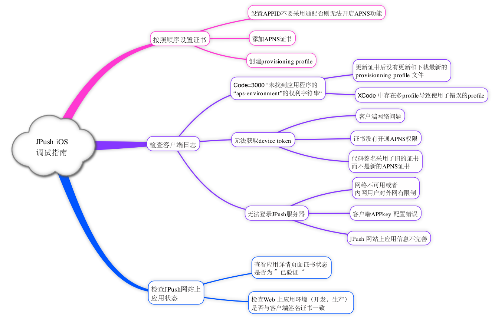
确认证书
请到“应用详情页面”确认证书可用性：
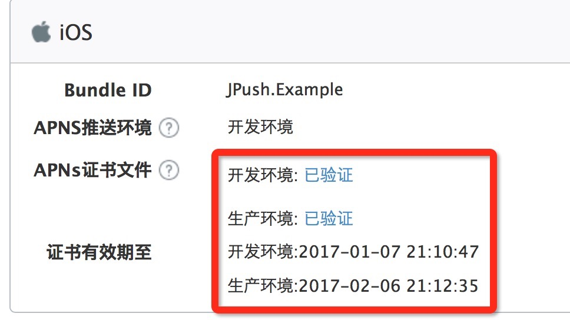
开发环境测试
在对 JPush iOS 开发环境进行测试前，请确保 3 个统一：
- App 是开发环境打包（开发证书 Development）
- 上传了开发证书并验证通过
- Portal 上的应用设置为开发环境
发布环境测试
在对 JPush iOS 生产环境进行测试前，请确保 3 个统一：
- App 是 ad-hoc 打包或者App Store 版本（发布证书 Production）
- 上传了发布证书并验证通过
- Portal 上的应用设置为生产环境
可能存在的其他问题
收到消息不够稳定
JPush iOS 是对原生官方 APNs 推送的一个补充，是对其的封装，以帮助开发人员更轻松地使用 APNs 。
由于APNs 本身不承诺保证消息到达，客户端网络与服务器端的连通性，对 APNs 是否及时接收到消息具有很大的影响。
iOS 证书 设置指南
创建应用程序ID
- 登陆 iOS Dev Center 选择进入iOS Provisioning Portal。

- 在 iOS Provisioning Portal中，点击App IDs进入App ID列表。

- 创建 App ID，如果 ID 已经存在可以直接跳过此步骤
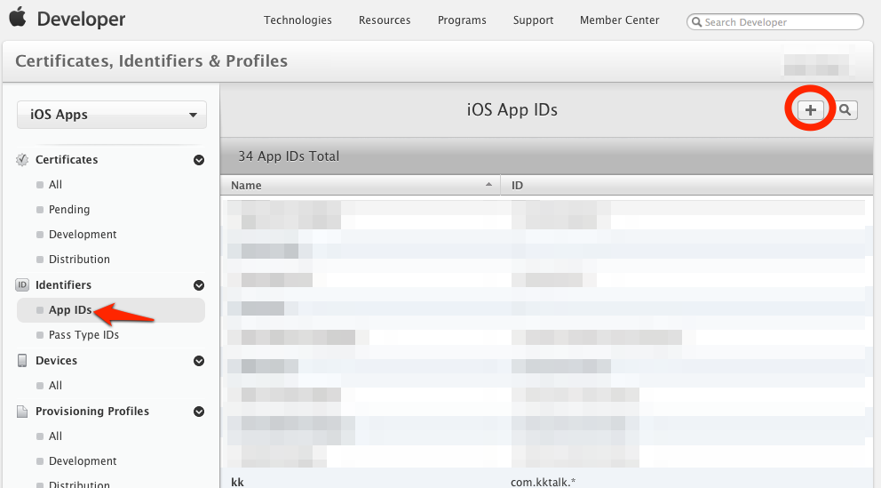
- 为 App 开启 Push Notification 功能。如果是已经创建的 App ID 也可以通过设置开启 Push Notification 功能。

根据实际情况完善 App ID 信息并提交,注意此处需要指定具体的 Bundle ID 不要使用通配符。
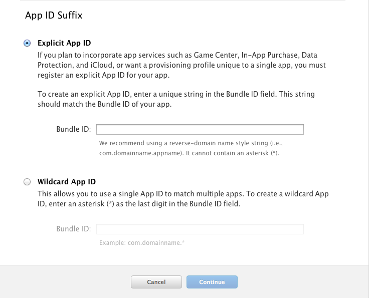
配置和下载证书
- 如果你之前没有创建过 Push 证书或者是要重新创建一个新的，请在证书列表下面新建。
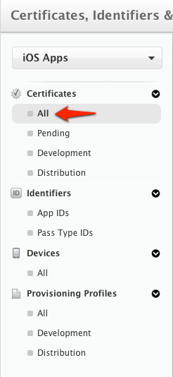
- 新建证书需要注意选择证书种类（开发证书用于开发和调试使用，生产证书用于 App Store 发布）

- 点击 Continue 后选择证书对应的应用ID，然后继续会出现“About Creating a Certificate Signing Request (CSR)”。

- 根据它的说明创建打开KeychainAccess 创建 Certificate Signing Request。

- 填写“User Email Address”和“Common Name” 后选择 Saved to disk 进行保存 。
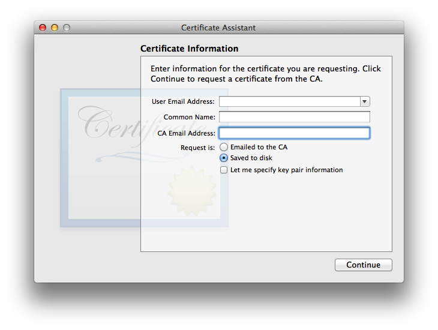
- 继续返回Apple developer 网站点击 Continue ，上传刚刚生成的 .certSigningRequest 文件生成 APNs Push Certificate。
- 下载并双击打开证书，证书打开时会启动“钥匙串访问”工具。
- 在“钥匙串访问”中你的证书会显示在“我的证书”中，注意选择“My Certificates” 和"login"

导出 .p12 证书文件
注意要选“login”和“My Certificates” 导出证书时要选中证书文件，不要展开private key。

- 将文件保存为Personal Information Exchange (.p12)格式。

- 将文件保存为Personal Information Exchange (.p12)格式。
上传证书
在 JPush 管理 Portal 上，针对某应用程序，上传上面步骤得到 .p12 证书文件。这是 iOS SDK 能够接收到 JPush 推送消息的必要步骤。
Provisioning Profile的创建
- 创建Provisioning Profile的前提，已在Apple Developer网站创建待发布应用所使用的Bundle ID的App ID，且为该App ID创建了APNs证书，如下图:
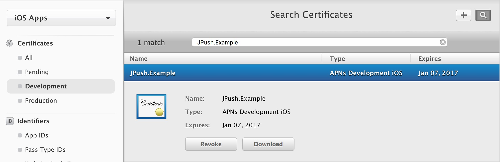
-
创建App ID、APN证书和p12证书的导出的具体步骤请看 :iOS 证书 设置指南
-
在苹果开发者账号的Provisioning Profile页面点击下图按钮，创建Provisioning Profile
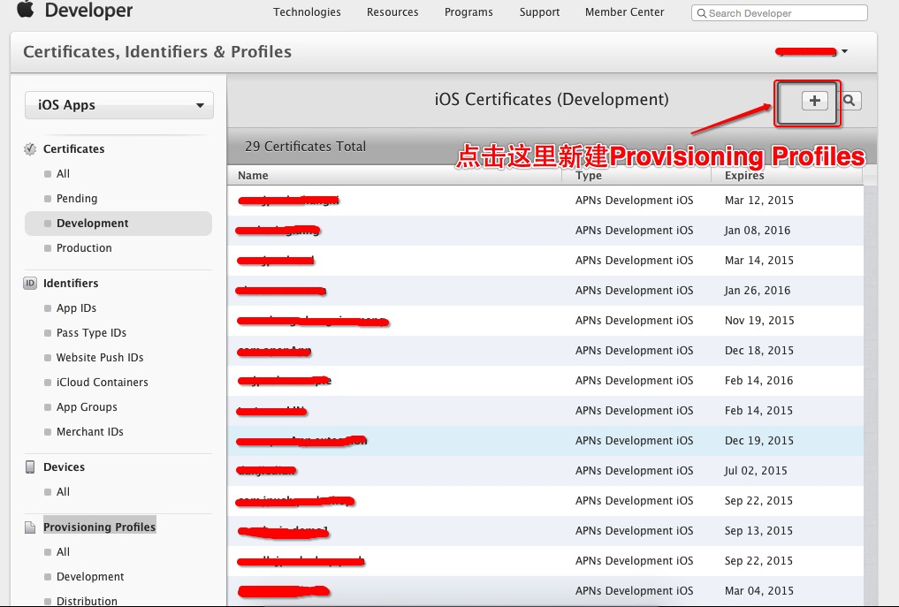
- 选择此Provisioning Profile的环境后点击[Continue]：
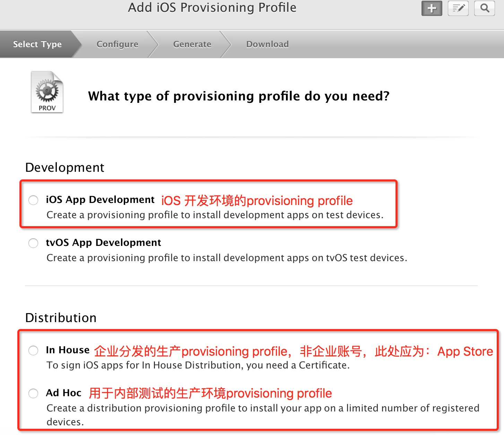
- 选择要创建Provisioning Profile的App ID后点击[Continue]：
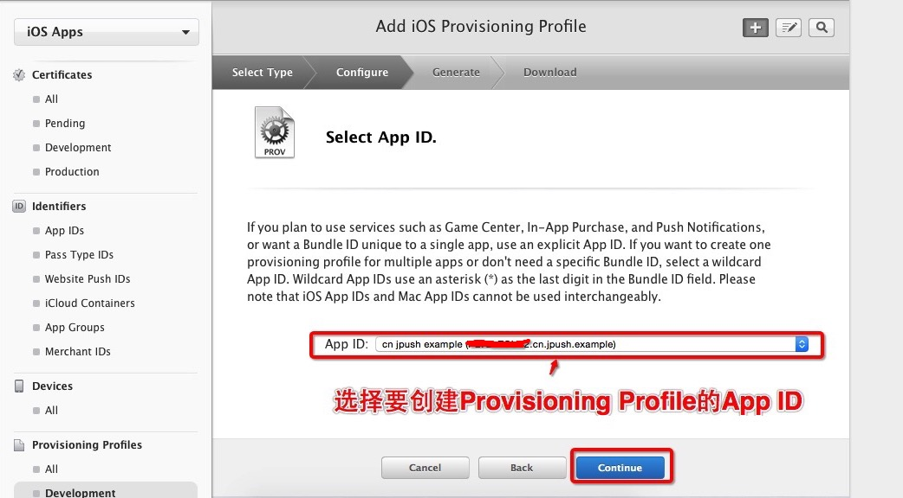
- 选择所属的开发者证书，（这里创建了多个开发者证书，建议只创建一个，方便管理）为了方便，选择了[Select All]，再点击[Continue]进入下一步：
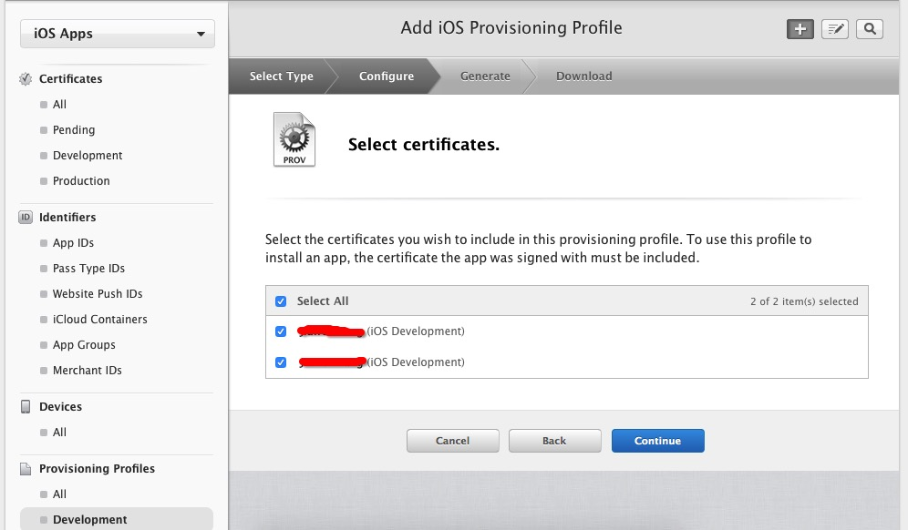
- 为该Provisioning Profile选择将要安装的设备（一般选择[Select All]），点击[Continue]:
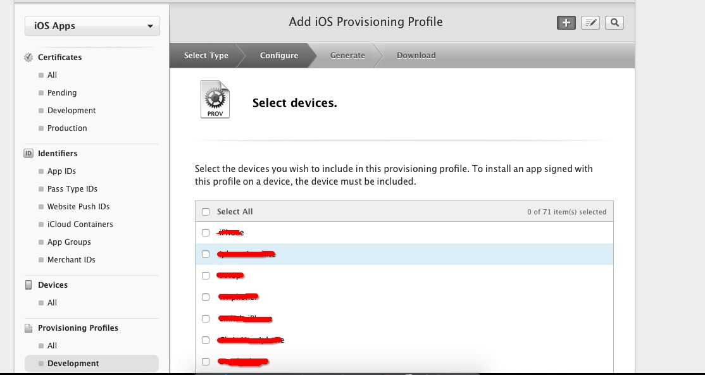
- 给该Provisioning Profile填写Profile Name，点击[generate]完成创建。
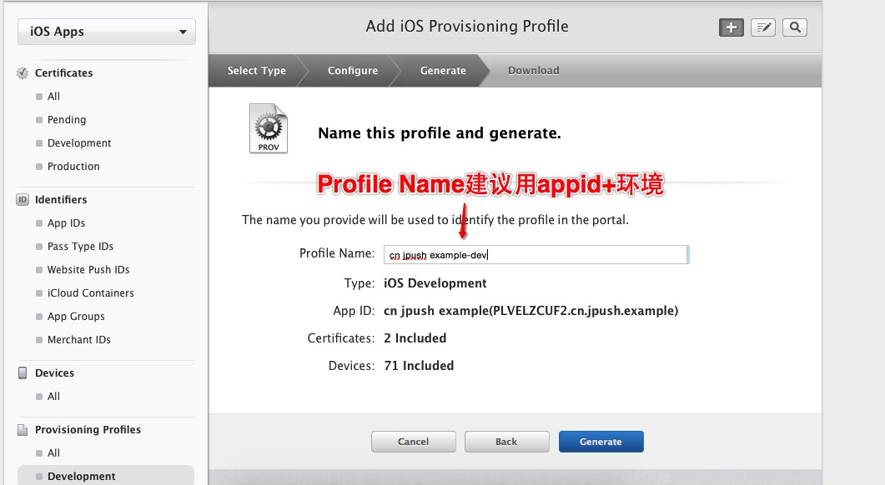
- 填写完Profile Name后点击[generate]完成创建，之后点击[DownLoad]下载Provisioning Profile
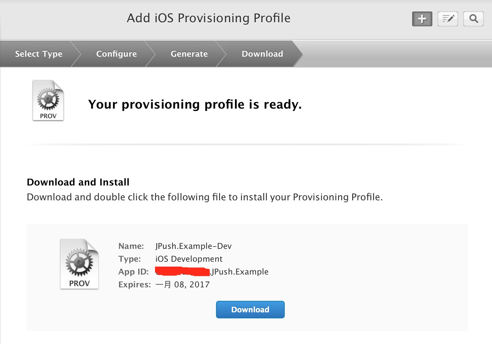
- 双击下载下来的Provisioning Profile，添加到xcode。
XCode的证书配置教程
参照iOS SDK 集成指南集成JPush SDK 和上传了推送用到的p12证书后在编译运行前需要先配置一下证书，步骤如下：
- 打开xxx-info.plist的Bundle identifier项把上传到JPush 控制台的bundle id填写进去：
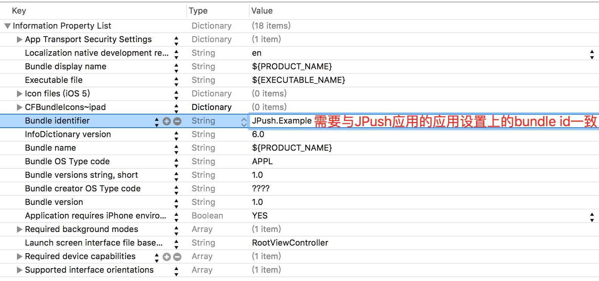
- 点击项目，选择目标TARGETS后进入Build Setting 界面，搜索“Code signing”，按照下图配置
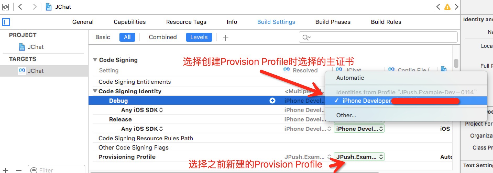
iOS 7 Background Remote Notification
本次iOS 7在推送方面最大的变化就是允许，应用收到通知后在后台（background）状态下运行一段代码，可用于从服务器获取内容更新。功能使用场景：（多媒体）聊天，Email更新，基于通知的订阅内容同步等功能，提升了终端用户的体验。
Remote Notifications 与之前版本的对比可以参考下面两张 Apple 官方的图片便可一目了然。
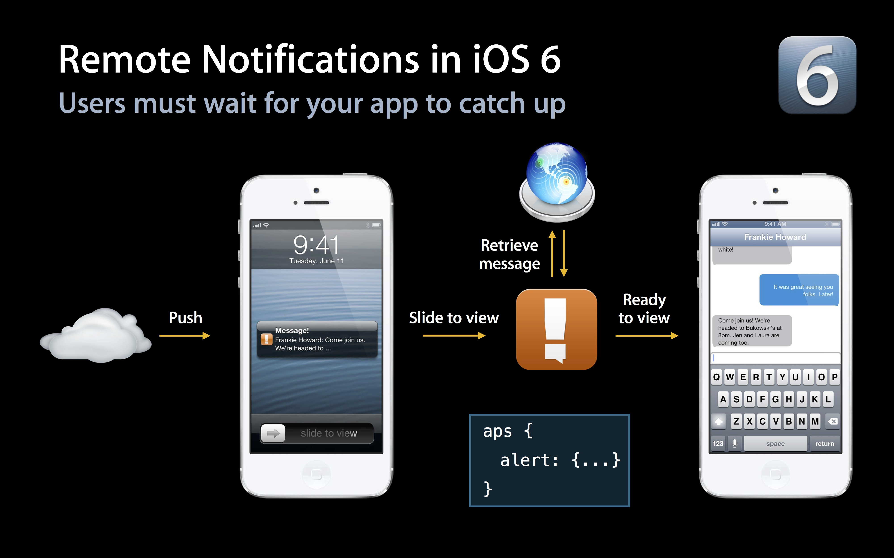
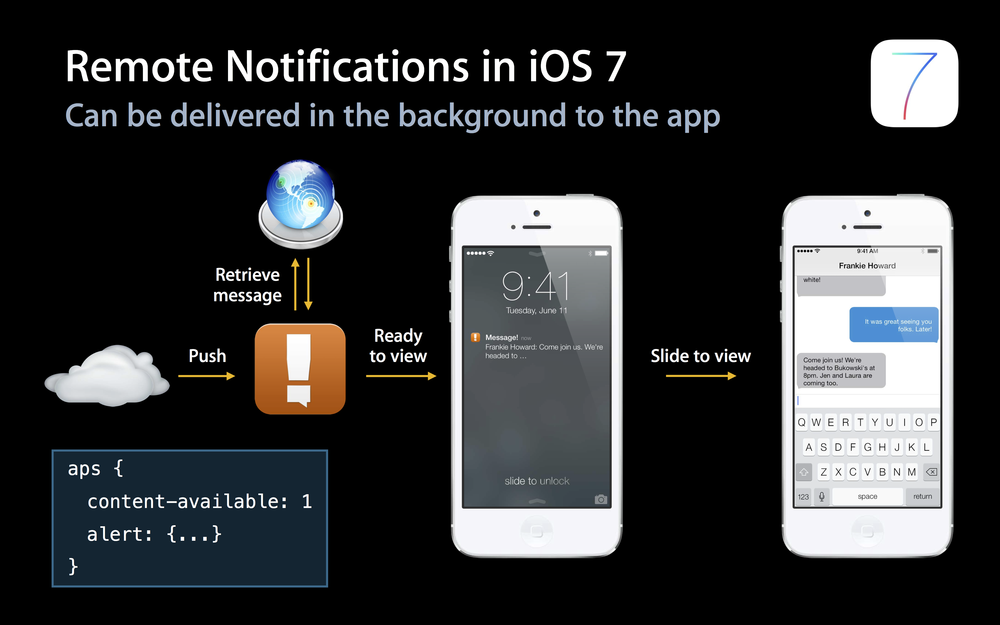
如果只携带content-available: 1 不携带任何badge，sound 和消息内容等参数，则可以不打扰用户的情况下进行内容更新等操作即为“Silent Remote Notifications”。
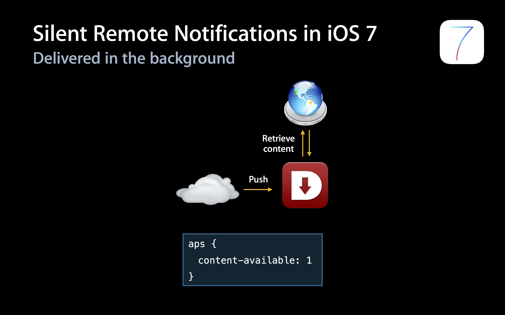
客户端设置
开启Remote notifications
需要在Xcode 中修改应用的 Capabilities 开启Remote notifications，请参考下图：
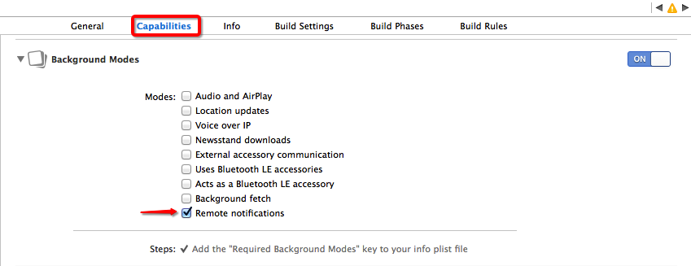
修改通知处理函数
当注册了Backgroud Modes -> Remote notifications 后，notification 处理函数一律切换到下面函数，后台推送代码也在此函数中调用。
- (void)application:(UIApplication *)application didReceiveRemoteNotification:(NSDictionary *)userInfo fetchCompletionHandler:(void (^)(UIBackgroundFetchResult))completionHandler；
服务端推送设置
推送消息携带 content-available: 1 是Background 运行的必须参数，如果不携带此字段则与iOS7 之前版本的普通推送一样。
使用Web Portal 推送
在“可选设置内”选择对应的参数。
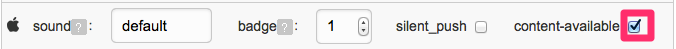
使用 API 推送
只需在Push API v3 的 ios 内附加content-available":true 字段即可
限制与注意
- “Silent Remote Notifications”是在 Apple 的限制下有一定的频率控制，但具体频率不详。所以并不是所有的 “Silent Remote Notifications” 都能按照预期到达客户端触发函数。
- “Background”下提供给应用的运行时间窗是有限制的，如果需要下载较大的文件请参考 Apple 的 NSURLSession 的介绍。
- “Background Remote Notification” 的前提是要求客户端处于Background 或 Suspended 状态，如果用户通过 App Switcher 将应用从后台 Kill 掉应用将不会唤醒应用处理 background 代码。
更详细的说明资料请查阅 Apple 官方的 iOS 开发文档。
iOS 8 UIUserNotificationSettings
支持版本
v1.8.0 版本开始。
- 本次iOS 8在推送方面最大的变化就是修改了推送的注册接口，在原本的推送type的基础上，增加了一个categories参数，这个参数的目的是用来注册一组和通知关联起来的button的事件。
- 这个categories由一系列的 UIUserNotificationCategory组成。每个UIUserNotificationCategory对象包含你的app用来响应本地或者远程通知的信息。每一个对象的title作为通知上每一个button的title展示给用户。当用户点击了某一个button，系统将会调用应用内的回调函数application:handleActionWithIdentifier:forRemoteNotification:completionHandler:或者application:handleActionWithIdentifier:forLocalNotification:completionHandler:。
客户端设置
使用UIUserNotificationCategory
if ([[UIDevice currentDevice].systemVersion floatValue] >= 8.0) {
NSMutableSet *categories = [NSMutableSet set];
UIMutableUserNotificationCategory *category = [[UIMutableUserNotificationCategory alloc] init];
category.identifier = @"identifier";
UIMutableUserNotificationAction *action = [[UIMutableUserNotificationAction alloc] init];
action.identifier = @"test2";
action.title = @"test";
action.activationMode = UIUserNotificationActivationModeBackground;
action.authenticationRequired = YES;
//YES显示为红色，NO显示为蓝色
action.destructive = NO;
NSArray *actions = @[ action ];
[category setActions:actions forContext:UIUserNotificationActionContextMinimal];
[categories addObject:category];
}
使用UIUserNotificationType
if ([[UIDevice currentDevice].systemVersion floatValue] >= 8.0) {
[APService registerForRemoteNotificationTypes:(UIUserNotificationTypeBadge | UIUserNotificationTypeSound | UIUserNotificationTypeAlert) categories:categories];
}else{
[APService registerForRemoteNotificationTypes:(UIUserNotificationTypeBadge | UIUserNotificationTypeSound | UIUserNotificationTypeAlert) categories:nil];
}
使用回调函数
// Called when your app has been activated by the user selecting an action from
// a remote notification.
// A nil action identifier indicates the default action.
// You should call the completion handler as soon as you've finished handling
// the action.
- (void)application:(UIApplication *)application handleActionWithIdentifier:(NSString *)identifier forRemoteNotification:(NSDictionary *)userInfo
completionHandler:(void (^)())completionHandler {
}
服务端设置
服务端payload格式:aps增加category字段，当该字段与客户端UIMutableUserNotificationCategory的identifier匹配时，触发设定的action和button显示。
payload example:
{"aps":{"alert":"example", "sound":"default", "badge": 1, "category":"identifier"}}
iOS 9 UIUserNotificationActionBehaviorTextInput
支持版本
v1.8.0 版本开始
- 本次iOS 9在推送方面最大的变化就是修改了推送Category的类型，在原本的推送categories的基础上，增加了一个text Action类型，这个参数的目的是用来注册通过通知快捷文字输入的事项。
- 这个categories由一系列的 UIUserNotificationCategory组成。每个UIUserNotificationCategory对象允许添加一组UIMutableUserNotificationAction类型的参数来增加通知栏上的项目。如今iOS9在原有的UIMutableUserNotificationAction类型增加了Text输入类型(UIUserNotificationActionBehaviorTextInput),通过behavior来设置(只有iOS9才拥有的属性)。
- 回调的方法iOS9使用了两个新的回调方法来处理点击按钮的事件:
- (void)application:(UIApplication *)application handleActionWithIdentifier:(nullableNSString *)identifier forLocalNotification:(UILocalNotification *)notification withResponseInfo:(NSDictionary *)responseInfo completionHandler:(void(^)())completionHandler NS_AVAILABLE_IOS(9_0)
- (void)application:(UIApplication *)application handleActionWithIdentifier:(nullableNSString *)identifier forRemoteNotification:(NSDictionary *)userInfo withResponseInfo:(NSDictionary *)responseInfo completionHandler:(void(^)())completionHandler NS_AVAILABLE_IOS(9_0)
说明:
-
当Action为UIUserNotificationActionBehaviorTextInput时,需要通过responseInfo的UIUserNotificationActionResponseTypedTextKey来获取输入的文字内容,UIUserNotificationTextInputActionButtonTitleKey获取点击的按钮类型.
-
当Action为UIUserNotificationActionBehaviorDefault时,responseInfo为nil,通过identifier来区分点击按钮分别是什么来做处理.
客户端设置
设置带有快速回复内容的通知
#ifdef __IPHONE_9_0
UIMutableUserNotificationAction *replyAction = [[UIMutableUserNotificationAction alloc]init];
replyAction.title = @"Reply";
replyAction.identifier = @"comment-reply";
replyAction.activationMode = UIUserNotificationActivationModeBackground;
replyAction.behavior = UIUserNotificationActionBehaviorTextInput;
UIMutableUserNotificationCategory *category = [[UIMutableUserNotificationCategory alloc]init];
category.identifier = @"reply";
[category setActions:@[replyAction] forContext:UIUserNotificationActionContextDefault];
#endif
使用回调函数
- (void)application:(UIApplication *)application handleActionWithIdentifier:(nullable NSString *)identifier forRemoteNotification:(NSDictionary *)userInfo withResponseInfo:(NSDictionary *)responseInfo completionHandler:(void(^)())completionHandler NS_AVAILABLE_IOS(9_0) {
if ([identifier isEqualToString:@"comment-reply"]) {
NSString *response = responseInfo[UIUserNotificationActionResponseTypedTextKey];
//对输入的文字作处理
}
completionHandler();
}
服务端设置
服务端payload格式:aps增加category字段，当该字段与客户端UIMutableUserNotificationCategory的identifier匹配时，触发设定的action和button显示。
payload example:
{"aps":{"alert":"example", "sound":"default", "badge": 1, "category":"reply"}}
iOS 8 UILocalNotification
本次iOS 8 UILocalNotification增加了三个参数: region、regionTriggersOnce、category。
- region: 用于控制当用户进入或者离开某一个地理位置时候，触发通知。使用此功能，用户需要拥有CoreLocation的"when-in-use"权限。
- regionTriggersOnce(BOOL)：当为YES时，通知只会触发一次，当为NO时，通知将会在每一次进入或者离开时都触发。
- category:如果localNotification通过+[UIUserNotificationSettings settingsForUserNotificationTypes:userNotificationActionSettings:]注册了，通过该category可以获取该通知的注册category.
客户端设置
使用UILocalNotification
// set localNotification
CLLocationCoordinate2D coordinate2D;
coordinate2D.latitude = 100.0;
coordinate2D.longitude = 100.0;
CLRegion *currentRegion =
[[CLCircularRegion alloc] initWithCenter:coordinate2D
radius:CLLocationDistanceMax
identifier:@"test"];
[APService setLocalNotification:[NSDate dateWithTimeIntervalSinceNow:120]
alertBody:@"test ios8 notification"
badge:0
alertAction:@"取消"
identifierKey:@"1"
userInfo:nil
soundName:nil
region:currentRegion
regionTriggersOnce:YES
category:@"test"];